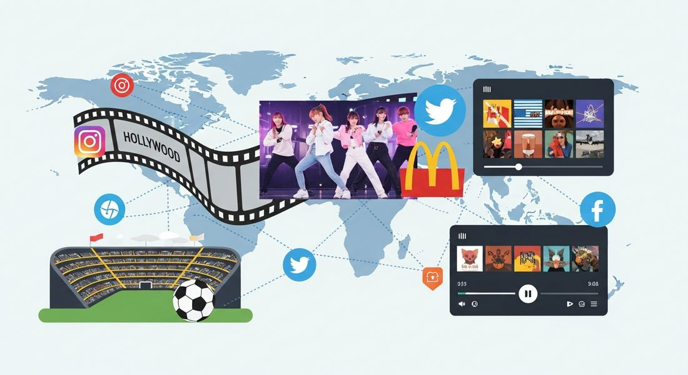

9.6 Globalized Culture After 1900
- LO-A: Politics and social change transformed the arts: The upheavals of the 20th century, world wars, decolonization, civil rights, the Cold War, drove explosive creativity in literature, music, film, and visual art. Artists responded to social change, challenged conventions, and used new media to reach global audiences. Popular culture went global in the second half of the century: Hollywood films, American rock and roll, British pop, Jamaican reggae, Indian Bollywood, and global sports (World Cup soccer, the Olympics) created shared cultural experiences across national borders. Television and radio, then the internet, accelerated this cultural integration. Consumer culture transcended borders: Global brands (Toyota, Coca-Cola), online commerce (Alibaba, eBay), and multinational retail brought similar products to consumers worldwide. A teenager in Seoul, São Paulo, or Lagos might wear the same jeans, drink the same soda, and watch the same streaming shows as one in New York. Globalization of culture was not homogenization: Cultural globalization didn't erase local diversity. Local cultures adapted, mixed with, and resisted global influences, creating new hybrid forms. Bollywood was Indian but had global audiences; K-pop was Korean but became a worldwide phenomenon. Culture flowed in multiple directions, not just from West to Rest.
Try each question before revealing the answer.
1. How did the 20th century's political upheavals shape artistic and cultural expression?
2. How did Bollywood become a global cultural phenomenon while remaining distinctly Indian?
3. How did Coca-Cola become a global brand and what does this tell us about consumer culture globalization?
- Explain how and why globalization changed culture over time, including how political and social changes led to changes in arts and popular culture, how arts and entertainment reflected global society, and how consumer culture transcended national borders
Tap a term for its definition.
-
Definition: The spread of cultural practices, values, ideas, and products across national borders, creating shared cultural experiences globally. Significance: 20th-century technology (radio, film, television, internet) enabled cultural globalization at unprecedented speed and scale.
-
Definition: A music genre that originated in Jamaica in the late 1960s, characterized by rhythmic style and often dealing with themes of social justice and Rastafarian spirituality. Significance: CED illustrative example of global culture; Bob Marley became an international icon, spreading Jamaican music and culture worldwide.
-
Definition: The Hindi-language film industry based in Mumbai, India, one of the world's largest by output. Significance: CED illustrative example of global culture; demonstrates how non-Western cultural forms can reach global audiences, challenging assumptions about cultural flow being primarily West-to-Rest.
-
Definition: A culture in which personal identity, social status, and daily life are shaped significantly by the consumption of goods and services. Significance: The 20th century saw consumer culture become genuinely global, the same brands, products, and shopping behaviors appearing across diverse national and cultural contexts.
-
Definition: Digital platforms enabling users to create and share content and participate in online communities (Facebook, Twitter/X, Instagram, TikTok, etc.). Significance: CED examples: Facebook, Twitter; social media accelerated cultural globalization while also enabling new forms of cultural and political resistance.
-
Definition: A product or company recognized and sold worldwide, transcending national origin. Significance: CED examples: Toyota, Coca-Cola; global brands represent the globalization of consumer culture, bringing similar products (and the values associated with them) to diverse markets worldwide.
🎨 Political Change Transforms Art and Culture (KC-6.3.IV.i)
The 20th century's extraordinary political upheavals, two world wars, totalitarianism, decolonization, the Cold War, civil rights struggles, transformed the arts as artists responded to, reflected, and challenged the world around them. The AP CED identifies this development: "Political and social changes of the 20th century led to changes in the arts and in the second half of the century, popular and consumer culture became more global."
The carnage of WWI shattered European confidence in civilization and progress, producing a wave of literary and artistic modernism that rejected traditional forms. Writers like Virginia Woolf and James Joyce experimented with stream-of-consciousness narration; painters like Picasso fragmented figures into cubist geometries; composers like Stravinsky abandoned harmonic conventions. These formal innovations expressed a world where old certainties, about progress, reason, and order, had been destroyed by industrial-scale slaughter.
WWII and the Holocaust produced further transformations. The German-Jewish poet Paul Celan wrote poetry that grappled with the impossibility of expressing the Holocaust in language. Existentialist writers like Jean-Paul Sartre and Albert Camus confronted the absurdity of human existence in a world capable of Auschwitz. Post-colonial literature emerged as African and Asian writers, from Chinua Achebe (Nigeria) to Gabriel García Márquez (Colombia), gave voice to experiences outside the European literary tradition, challenging the cultural assumptions that had framed colonialism as "civilization."

Image credit not specified.
AI-generated illustration (Google Gemini, 2025), commercially licensed.
🌍 Arts and Entertainment Reflect Global Society (KC-6.3.IV.ii)
In the second half of the 20th century, arts and entertainment became increasingly globalized, both reflecting and driving the interconnectedness of human society. The CED lists several illustrative examples spanning different media and cultural forms: music (reggae), movies (Bollywood), social media (Facebook, Twitter), television (BBC), and sports (World Cup soccer, the Olympics).
Reggae, emerging from Jamaica's Black working class in the late 1960s, carried themes of social justice, anti-colonialism, and spiritual liberation. Bob Marley's music crossed national and cultural boundaries to achieve global popularity, his image became one of the most recognized in the world. Reggae's global spread demonstrated that musical forms from peripheral, non-Western cultures could achieve worldwide reach, not just American or British popular music.
Bollywood, India's massive film industry, produced far more films annually than Hollywood and reached audiences not only in India but across South Asia, the Middle East, East Africa, and among South Asian diaspora communities worldwide. Its distinctive combination of elaborate musical sequences, melodramatic storytelling, and specific visual aesthetics created a global cultural form that was unmistakably Indian yet internationally beloved.
Social media platforms, Facebook (founded 2004), Twitter (2006), later Instagram, YouTube, and TikTok, accelerated cultural globalization to an unprecedented degree. A video, meme, or idea created anywhere could go viral globally within hours. Social media connected diaspora communities, enabled global cultural conversation, and created new forms of celebrity, activism, and cultural production that transcended national boundaries.
Television, represented by the BBC in the CED, had already created cross-national audiences for news and entertainment from the 1950s onward. The BBC World Service reached hundreds of millions of listeners globally; BBC programming was watched worldwide. Global sports events, World Cup soccer (watched by a cumulative 3.5 billion people in 2018) and the Olympics, created shared spectacles that billions across the globe experienced simultaneously, creating rare moments of genuine global cultural participation.
🛒 Consumer Culture Goes Global (KC-6.3.IV.iii)
The globalization of popular culture was inseparable from the globalization of consumer culture, the world of branded goods, retail experiences, and identity-through-consumption that characterized 20th-century modernity. The CED identifies this as a distinct development: "Consumer culture became globalized and transcended national borders."
Online commerce, represented by Alibaba (China, founded 1999) and eBay (US, 1995), transformed retail by enabling consumers anywhere in the world to buy goods from sellers anywhere in the world. Alibaba became not just China's dominant e-commerce platform but a global marketplace; eBay connected buyers and sellers across 190 countries. Online commerce eliminated the geographic constraints that had previously limited markets to local or national scales. A craftsperson in rural Morocco could now sell directly to buyers in Canada; a factory in Guangzhou could reach consumers in Brazil.
Global brands, the CED lists Toyota and Coca-Cola as illustrative examples, became recognized symbols worldwide. Toyota, founded in Japan in 1937, grew into one of the world's largest automakers, with factories on every continent and cars in every major market. Coca-Cola, an American invention from 1886, became arguably the most globally recognized brand in history, sold in virtually every country on Earth and consumed by approximately 1.9 billion people daily. These global brands didn't just sell products; they sold lifestyles, aspirations, and cultural associations that crossed national and cultural boundaries.
The globalization of consumer culture raised significant questions. Critics worried about cultural homogenization, the fear that everywhere would come to look the same, with the same fast food restaurants, brand-name clothing, and entertainment content replacing local diversity. Others saw consumer culture globalization as a new form of cultural imperialism, particularly American cultural imperialism, imposed on the world through economic power. The next topic (9.7) explores the various forms of resistance these concerns generated.
🔄 Cultural Globalization: Synthesis, Not Just Spread
A crucial nuance often missed in discussions of cultural globalization: it was not simply the spread of Western (especially American) culture to the rest of the world, erasing local diversity. While American cultural influence was enormous, Hollywood, American music, American consumer brands, cultural globalization was a multi-directional process that created new hybrid forms.
Reggae spread from Jamaica and influenced British punk, American hip-hop, and African popular music, while itself being influenced by American rhythm and blues. Bollywood became globally popular and influenced Hollywood, which began incorporating Bollywood-style musical sequences. K-pop (Korean pop music) emerged in the late 1990s drawing on American hip-hop, Japanese pop, and Korean musical traditions, then achieved genuine global popularity, with Korean groups like BTS selling out stadiums worldwide. Telenovelas (Latin American soap operas) became globally popular, particularly in Africa. Culture moved in multiple directions simultaneously, creating not uniformity but a complex, layered global cultural landscape in which local identities persisted and mixed with global influences.
These videos will help you review Globalized Culture After 1900 and solidify key concepts before your exam.
- Government censorship forced artists to develop coded forms of expression.
- Political and social upheavals, including world wars, totalitarianism, and colonial conflicts, drove artists to develop new forms adequate to expressing new realities.
- The decline of religious patronage forced artists to appeal to mass commercial audiences.
- Technological innovations made traditional art forms obsolete.
- American cultural products dominated global entertainment in the late 20th century.
- Small nations could use cultural exports to achieve economic independence from wealthy nations.
- Music and film were more important than other art forms in the globalization era.
- Cultural globalization involved non-Western cultural forms achieving global audiences, not just the spread of Western culture.
- multinational corporations that exploited developing-world labor.
- the dominance of American economic institutions in the late 20th century.
- consumer culture becoming globalized and transcending national borders.
- free-market economic liberalization policies spreading globally.
- created shared global cultural spectacles watched simultaneously by billions of people across national and cultural boundaries.
- were funded by multinational corporations seeking global advertising markets.
- promoted physical fitness and athleticism in developing nations.
- represented nations competing peacefully as an alternative to military conflict.
- American cultural products uniformly replaced local cultural traditions worldwide.
- Cultural exchange was limited to wealthy industrialized nations with advanced communication technology.
- Global cultural exchange increased political stability by reducing national cultural differences.
- Cultural globalization produced new hybrid forms as local cultures adapted to and mixed with global influences.